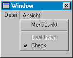

Hilfe
MenuText

Aufruf
Parameter
Rückgabewert
Beschreibung
Beispiel
Siehe auch
text$ = MenuText$ (menü)
Parameter
| menü | Identität eines Menüs (ermittelt mit CreateMenu) |
Rückgabewert
Die Bezeichnung des Menüs wird zurückgeliefert.
Beschreibung
Die Funktion MenuText liefert die Bezeichnung eines Menüs zurück. Umgekehrt kann mit SetMenuText auch MenüText geändert werden.
UpdateWindowMenu muss auf jeden Fall aufgerufen werden - da das Menü sonst nicht geändert wird.

Beispiel
Standardbeispiel:
window = CreateWindow( "", 0, 0, 640, 480 )
haupt_menu = CreateMenu( "Menü", 0, WindowMenu(window) )
txt_menu = CreateMenu( "TEXT", 1, haupt_menu )
textarea = CreateTextArea(0, 0, ClientWidth(window), ClientHeight(window), window)
UpdateWindowMenu window
While WaitEvent()<>$803
If EventID() = $1001 Then
Select EventData()
Case 1
Notify "MenüTEXT = " + MenuText$(txt_menu)
End Select
EndIf
SetStatusText window, "MenüTEXT = " + MenuText$(txt_menu)
Wend
End
haupt_menu = CreateMenu( "Menü", 0, WindowMenu(window) )
txt_menu = CreateMenu( "TEXT", 1, haupt_menu )
textarea = CreateTextArea(0, 0, ClientWidth(window), ClientHeight(window), window)
UpdateWindowMenu window
While WaitEvent()<>$803
If EventID() = $1001 Then
Select EventData()
Case 1
Notify "MenüTEXT = " + MenuText$(txt_menu)
End Select
EndIf
SetStatusText window, "MenüTEXT = " + MenuText$(txt_menu)
Wend
End
Siehe auch
CheckMenu, CreateMenu, DisableMenu, EnableMenu, MenuChecked, MenuEnabled, SetMenuText, UncheckMenu, UpdateWindowMenu, WindowMenu